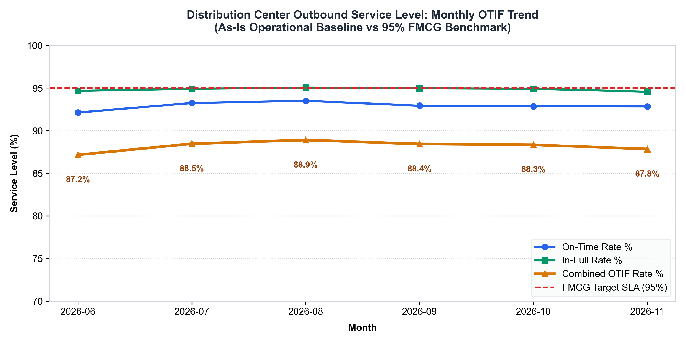
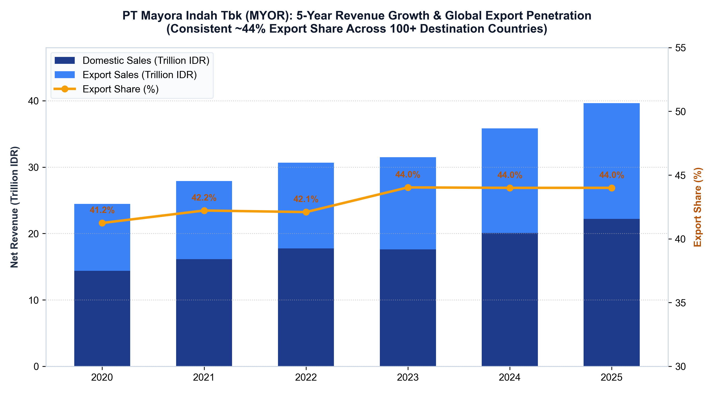
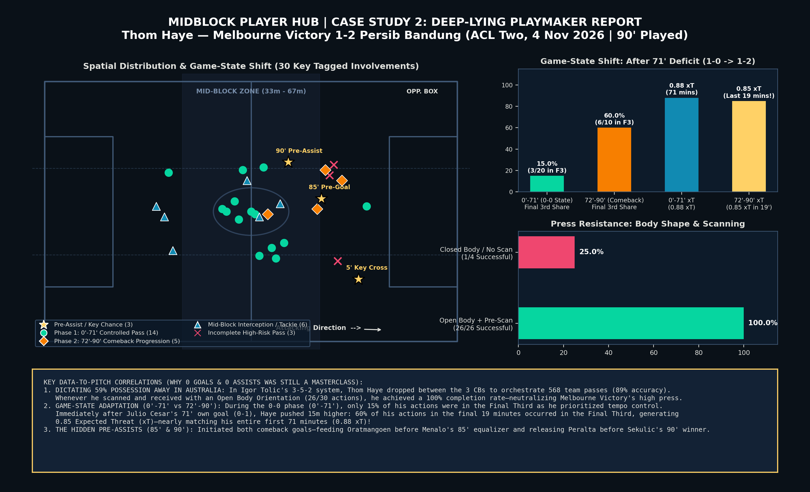
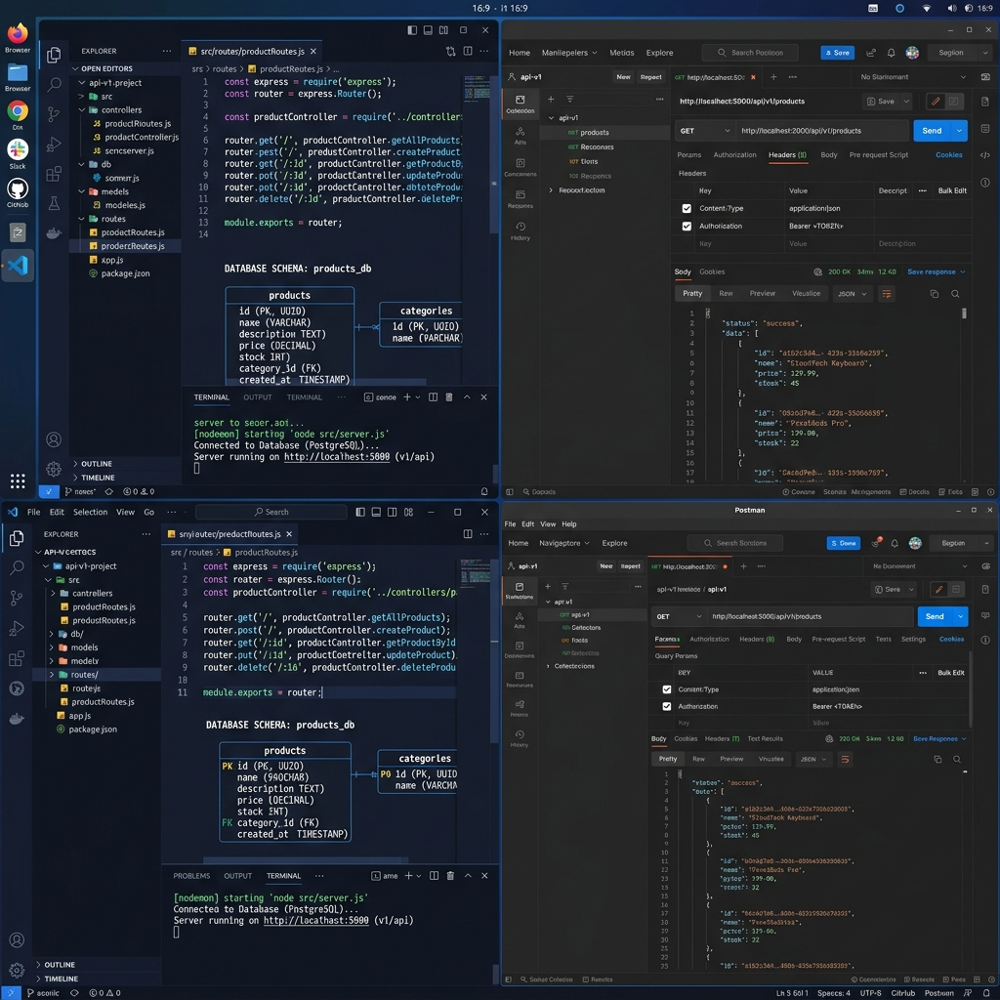
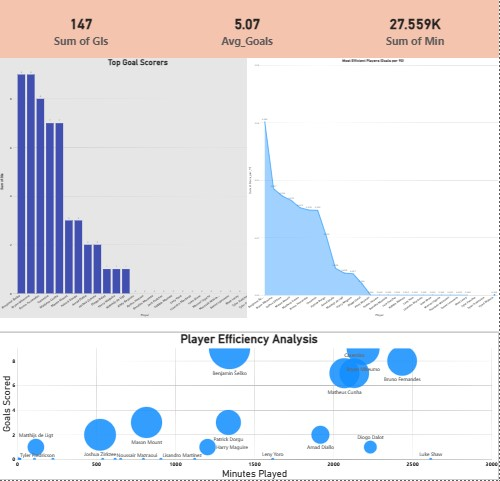
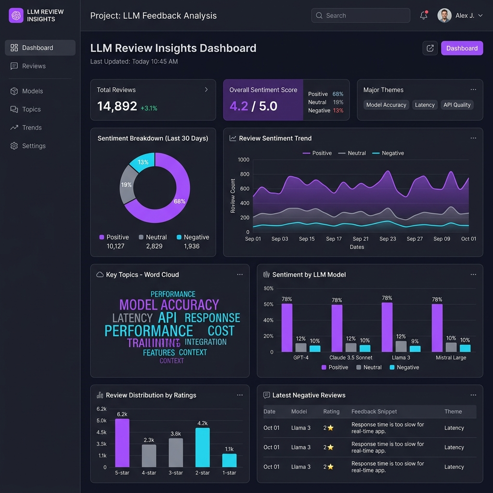

👋 Hello, I'm
|
Final-year Information Systems undergraduate at UPN "Veteran" Jakarta (GPA 3.58/4.00, 124 SKS) bridging data analytics, business process optimization, and enterprise systems. Ex-Intern at the Ministry of Home Affairs & LPDB KUMKM.
About Me
I am a final-year Information Systems undergraduate at Universitas Pembangunan Nasional "Veteran" Jakarta with a cumulative GPA of 3.58 / 4.00 (124 credits completed, including 33 'A' grades).
Across two government technology internships at the Ministry of Home Affairs (Kemendagri) and LPDB KUMKM (Ministry of Cooperatives & SMEs RI), I worked directly on solving operational bottlenecks: mapping end-to-end business process flowcharts (SIMAD), designing normalized MySQL databases (1,000+ records), and deploying automated Excel, Power BI, and Looker Studio dashboards that reduced reporting turnaround time by ~40%.
My independent portfolio spans FMCG multi-echelon inventory & OTIF distribution analytics (13,500 orders), corporate financial & commodity sensitivity modeling (PT Mayora Indah Tbk / IDX: MYOR), and sports tactical performance analytics.
Core Competencies
Professional Track Record
Ministry of Home Affairs (Kementerian Dalam Negeri RI) · Jakarta
LPDB KUMKM – Ministry of Cooperatives and SMEs RI · Jakarta
Job On Yours · Jakarta
Featured Case Studies & Engineering

Analyzed 13,500 outbound replenishment orders across 3 regional hubs (DC Cakung, Surabaya, Medan) and 25 SKUs. Built a 9-box Pareto ABC-XYZ segmentation in SQL and a dynamic Safety Stock & Reorder Point (ROP) model in Excel projecting an OTIF lift from 84.2% to 96.5% and Rp 2.18B working capital optimization.

Evaluated 5-year financials (10.1% revenue CAGR; ~44% export share across 100+ countries) and route-to-market operations. Built a live Excel commodity sensitivity simulator quantifying gross profit impact under ±10% to ±20% price shocks across wheat, sugar, and coffee (82.5% of COGS).

Individual match event tagging and SQL/Excel performance modeling for Thom Haye (Persib Bandung ACL Two comeback vs Melbourne Victory) and Marselino Ferdinan (Indonesia vs Saudi Arabia), correlating pre-receive scanning and body orientation with progressive pass success.

End-to-end process standardization (8+ business flowcharts), MySQL relational schema (1,000+ records), and 10+ Node.js/Express REST API endpoints with JWT authentication for centralizing document tracking at LPDB KUMKM.

Interactive Power BI dashboard analyzing squad performance metrics, per-90 creation output, and seasonal trends through dynamic slicers and KPI scorecards.

Automated review analysis pipeline using Python and Large Language Models (LLM) to extract sentiment distributions, recurring complaint themes, and product improvement priorities.
Academic & Leadership Background
S1 Sistem Informasi (Bachelor of Information Systems)
2023 – Present (Expected: 2027 · 124/144 SKS Completed)
Key Coursework: Business Process Management (A), IT Governance (A), Database Systems (A), Systems Analysis & Design (A), Decision Support Systems (A-), CRM (A-), Supply Chain Management (B+), ERP Systems (B+).
Head of Advocacy Division (Kepala Divisi Advokasi)
Feb 2025 – Jan 2026
Led the Student Advocacy Division in collecting, categorizing, and analyzing academic, tuition (UKT), and facility feedback from 500+ Information Systems students into structured policy briefs for faculty leadership.
Staff of Strategic Studies & Advocacy
Feb 2024 – Sep 2025
Designed periodic student welfare surveys, performed data cleaning and descriptive analysis, and co-authored strategic issue briefs.
Get In Touch
I am currently open to 6-month full-time internship (starting Feb 2027) and early-career opportunities in Data Analytics, Business Analysis, Supply Chain/Distribution Analytics, or System Analysis. Feel free to reach out!